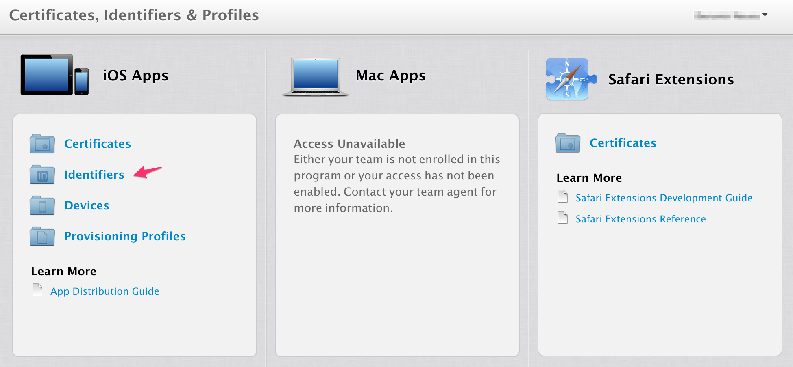
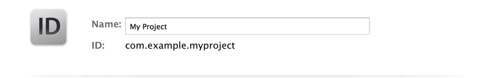
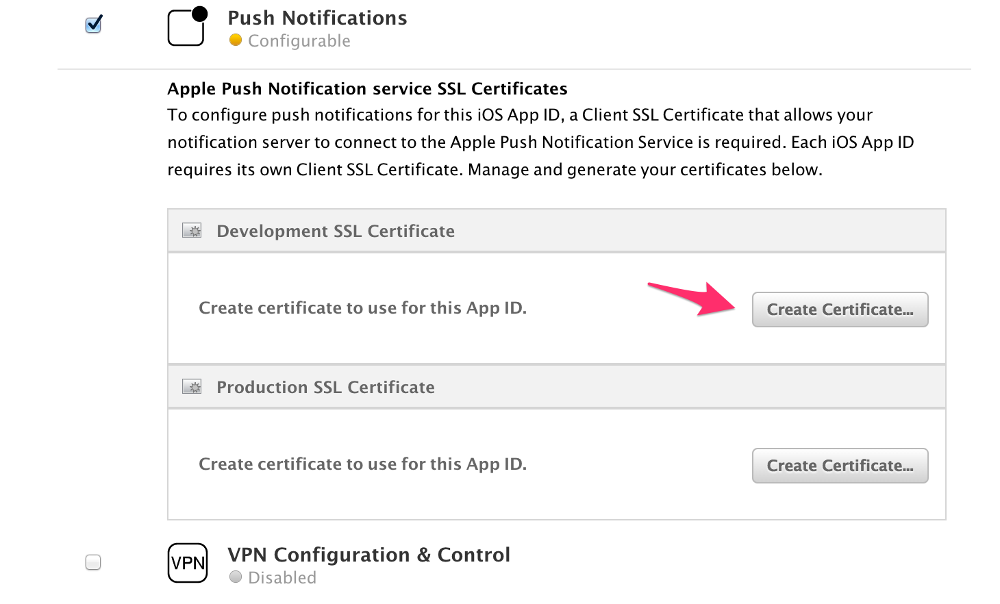
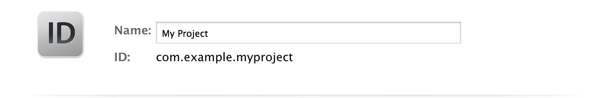
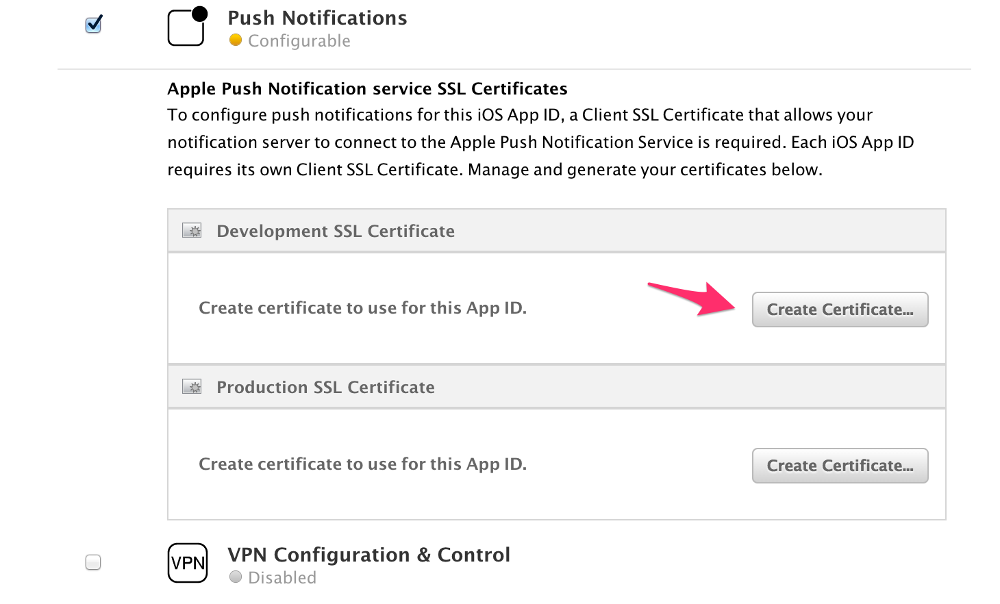

TQ1 Requirements
This file describes the requirements for any iOS project to be considered ready for the TQ1 services.
TL;DR
For development iOS applications you must have:
- Your application registered at iOS Developer Portal.
- Push Notifications services enabled.
- An Apple Push Notification service SSL (Sandbox) certificate exported as a .p12 file.
- The password for the above specified certificate.
For staging or production iOS applications you must have:
- Your application registered at iOS Developer Portal.
- Push Notifications services enabled.
- An Apple Push Notification service SSL (Production) certificate exported as a .p12 file.
- The password for the above specified certificate.
iOS
This guide assumes that:
- You have an Apple Account and you are registered in an iOS Developers Program. Otherwise you can follow these instructions.
Development
Then keep going with the following items
- Access your iOS Developer Portal.
-
Find the identifiers section.
 3. In the case you haven't registered your App ID yet, click on the '+' symbol and follow the instructions presented there. Do not forget to enable Push Notifications.

 4. Create a Push Certificate.
1. Select your application on the App IDs list and, then, click on the edit button. You will see all the services available for your application. In Push Notifications section, create a development certificate.


2. Follow the presented instructions and download the certificate as an aps_development.cert file.
3. Double-click the certificate and add it to your Keychain.
4. Create a Push Certificate.
1. Select your application on the App IDs list and, then, click on the edit button. You will see all the services available for your application. In Push Notifications section, create a development certificate.


2. Follow the presented instructions and download the certificate as an aps_development.cert file.
3. Double-click the certificate and add it to your Keychain. -
Export the certificate.
- With the Keychain Access application open, click on the certificate and select the option Export "Apple Development IOS Push Services...".
-
Select the option Personal Information Exchange (.p12).
 3. A dialog will appear asking you to provide a password for the key.
3. A dialog will appear asking you to provide a password for the key.
4. Then store securely your certificate.p12 file. -
Both the certificate.p12 and password are required for the TQ1 setup.
Staging and Production
- For the staging environment setup, use the same application created for development, whereas for production you should create a new one following the previous steps [1-5]
- The only difference is that you should create an Apple Push Notification service SSL (Production) certificate instead of a Sandbox one.

- Both the certificate.p12 and password are required for the TQ1 setup.